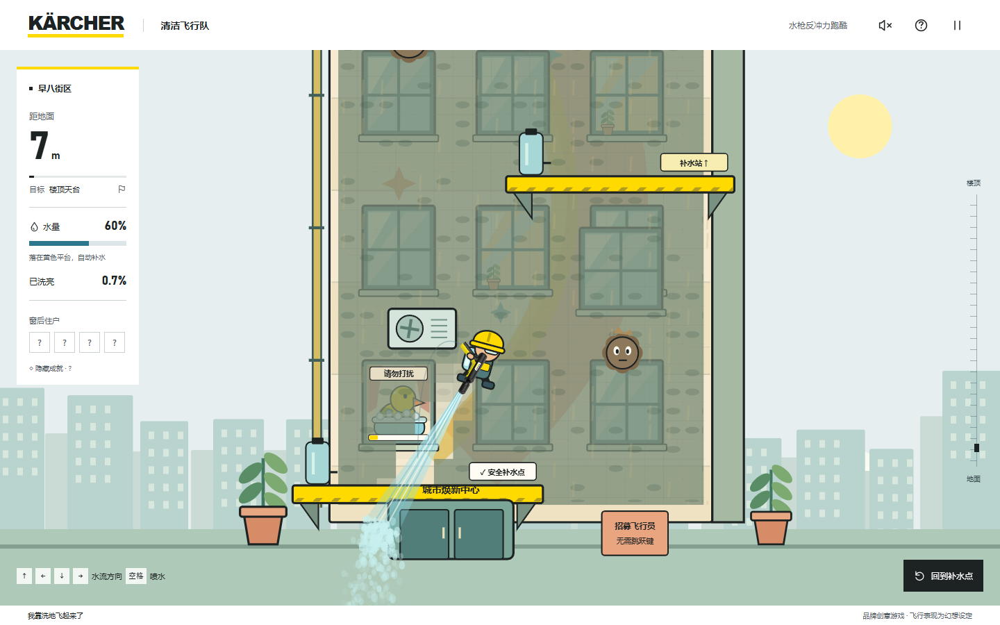

我靠洗地飞起来了：用水枪反冲力爬上摩天楼
水往下，人往上。游戏里没有跳跃键，只有一把水枪和一箱水：向左下喷水，人就会往右上飞。同一股水流还能清除墙面污渍。飞得更高，还是多洗亮一扇窗，取决于你如何分配有限的水量。

喷水、补水，再向上
用鼠标瞄准并按住左键，或用方向键选择水流方向、空格喷水；手机通过右下摇杆操作。途中需要绕开空调外机，落在黄色平台上停止喷水来补水。整栋楼安排了 7 个补水点、6 个空调障碍和 6 个泥团，路线选择与剩余水量紧密相关。
空中断水和侧面擦碰不会立刻结束游戏，空水落到黄色平台仍可补水；水用尽后落在空调顶部才会失败。飞行中的救援保留清洁区域，失败后重新开始新局。
洗亮窗户，也发现故事
局部清洁会逐渐露出四位住户，还有一扇写着“请勿打扰”的窗。发现内容可以解锁隐藏成就。登上天台后，镜头拉远揭晓全楼画作，并生成本局专属 PNG 海报；最终洁净度仍按照实际清除的污渍计算。
让飞行与判定各司其职
项目使用 TypeScript、Vite 和 Canvas 2D，以原生 HTML/CSS 构建界面，Web Audio 合成音效。物理按固定的 1/120 秒时间步推进，渲染与碰撞、清洁和胜负判定分开，避免把画面刷新直接当作游戏规则的时钟。
个人最佳与成就保存在当前浏览器，无需账号；音效默认关闭。完整操作、运行方式与素材说明见 项目 README。水枪飞行为游戏的幻想设定。